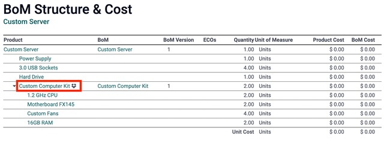

Usar kits¶
En Odoo, un kit es un tipo de lista de materiales (LdM) que se puede fabricar y vender. Los kits son conjuntos de componentes sin ensamblar que se pueden vender a los clientes como productos independientes. También pueden resultar útiles para gestionar listas de materiales más complejas.
Nota
Debe tener instaladas las aplicaciones Fabricación e Inventario para utilizar, fabricar y vender kits.
Crear un kit como producto¶
Para usar un kit como un producto que se pueda vender, o simplemente como una herramienta de organización de componentes, debe crearlo como producto.
Para crear un producto del kit, vaya a la aplicación , y haga clic en Crear.
Luego, escriba un nombre para el nuevo producto del kit. Después, en la pestaña Información general establezca el Tipo de producto como Consumible. Los productos de kit funcionan mejor como consumibles porque normalmente las existencias a la mano para los kits no se rastrean.
Nota
Aunque los kits casi siempre deben estar configurados como Consumibles, puede que las empresas que utilizan la contabilidad anglosajona necesiten crear kits como Productos almacenables. Esto es porque al procesar las facturas de los kits, el Costo de los bienes vendidos (COGS, por sus siglas en inglés) se publica en los diarios contables.
A diferencia de los productos almacenables, la asignación de Rutas en la pestaña de Inventario no importa para los kits, ya que Odoo usa las rutas de los componentes individuales de los kits para propósitos de reabastecimiento. El resto de los parámetros para el producto del kit se pueden modificar de acuerdo a su preferencia. Una vez que esté listo, haga clic en Guardar para guardar el nuevo producto.
Los componentes de los kits también deben estar configurados como productos en la aplicación . Estos productos no necesitan una configuración específica.
Configurar la LdM para un kit¶
Después de configurar por completo el producto del kit y sus componentes, puede crear una nueva LdM para el producto del kit.
Para hacerlo, vaya a la aplicación , y haga clic en Crear. Luego, en el campo de Producto haga clic en el menú desplegable para que aparezca una lista de productos y seleccione el producto de kit que configuro anteriormente.
Luego, para el campo Tipo de LdM, seleccione la opción Kit. Para finalizar, en la pestaña Componentes, haga clic en Agregar una línea y agregue cada componente que desee y especifique las cantidades en la columna Cantidad.
Una vez que esté lista, haga clic en Guardar para guardar la recién creada LdM.

Si el kit se utiliza únicamente como un producto vendible, solo es necesario agregar los componentes en la pestaña correspondiente y no es necesario configurar las operaciones de fabricación.
Nota
Cuando un kit se vende como un producto, en la cotización y la orden de venta aparece como un artículo de una sola línea pero en las órdenes de entrega cada componente del kit se enumera.
Usar kits para gestionar LdM complejas¶
Los kits también se utilizan para gestionar LdM multinivel. Son productos que contienen otros productos de LdM como componentes y, por lo tanto, requieren LdM anidadas. Incorporar kits preconfigurados en las LdM multinivel permite una organización más limpia de los productos.
Para configurar este tipo de LdM con un kit como componente, vaya a , y haga clic en Crear.
Junto al campo Producto, haga clic en el menú desplegable para que aparezca una lista de productos y seleccione el producto de LdM que desee. Después, para el campo Tipo de LdM, seleccione la opción Fabricar este producto.
En la pestaña Componentes, haga clic en Agregar una línea y seleccione el kit como el componente. Agregar el kit como componente elimina la necesidad de añadir los componentes del kit de manera individual. Puede utilizar cualquier Tipo de LdM para las LdM de productos de un nivel más alto.
Una vez que esté listo, haga clic en Guardar para guardar los cambios.

Estructura y costo¶
Para acceder a una vista general de los componentes de la LdM multinivel, haga clic en el botón inteligente de Estructura y costo. Las LdM de subnivel se pueden ampliar y ver desde este reporte.
Al crear una orden de fabricación para un productos con una LdM multinivel, el producto del kit se amplia de manera automática pata mostrar todos los componentes. Cualquier operación en la LdM del kit también se agrega a la lista de órdenes de trabajo en la orden de fabricación.
Truco
El propósito principal de los kits es agrupar componentes para venderlos o tener organizados. Si desea gestionar productos de varios niveles que requieren subcomponentes fabricados, consulte la siguiente documentación sobre subensamblajes.